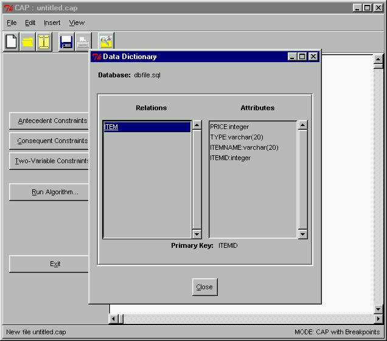

 |
Viewing the MetadataAfter our database is read in, its metadata will be immediately displayed by the CAP program. Here, we see that our dbfile.sql database has only one relation called ITEM. In addition, we note that the ITEM relation contains fields ITEMID, ITEMNAME, TYPE and PRICE. The datatypes of each field are indicated next to the attribute name, and the primary key of the relation is shown at the bottom of the Data Dictionary window. After examining all this information, we can click the Close button to close the Data Dictionary window.
|